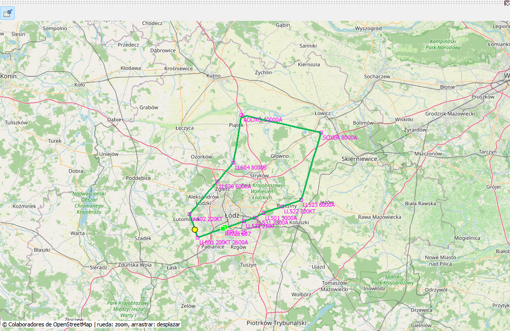

OpenStreetMap sitúa posiciones sobre el terreno. La traza son medidas y magenta es el plan. Tramos coincidentes no necesitan doble línea; quedan puntos y restricciones. Un segmento entre muestras no es medición metro a metro.
El ejemplo sale EPLL 25 por ADOX2W, ADOXO, SOXER, SOXE2T y LL501 hacia ILS Z 25. Ilustra funciones, no sustituye cartas actuales. Arrastre para mover, rueda para zoom y Ajustar para recuperar extensión. Las teselas nuevas requieren conexión.
La trayectoria real es posición medida; magenta representa el plan guardado.
| Opción / acción | Funcionamiento y limitaciones |
|---|---|
| Navegar | Arrastre, rueda/botones de zoom y ajustar. Vista general muestra rutas de biblioteca. |
| Teselas | Active/desactive fondo online. La caché puede funcionar offline; fondo vacío no significa GPS ausente. |
| Plan | Puntos nombrados y restricciones disponibles; tramos coincidentes sin línea duplicada. |
| Procedimientos | SID/STAR/aproximación resueltos desde EFB y guardados. Aproximación frustrada gris oscuro; esperas con parámetros y símbolos esquemáticos. |
| Coordenadas | SimBrief coincidente puede aportar nombres si difiere AIRAC; no actualiza la base de navegación. |
| Exportar | PNG es ilustración, KML trayectoria externa; ninguno sustituye .mfzr. |
